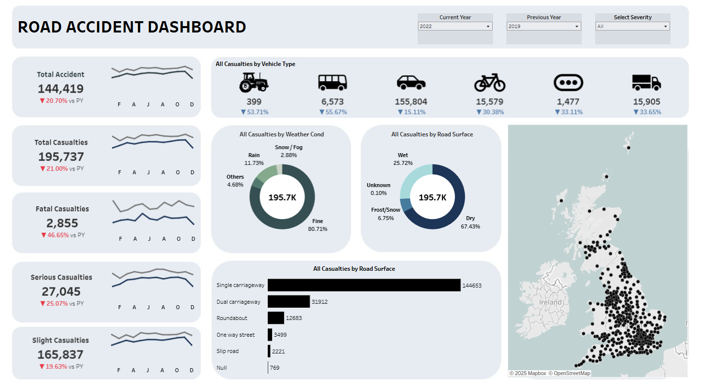
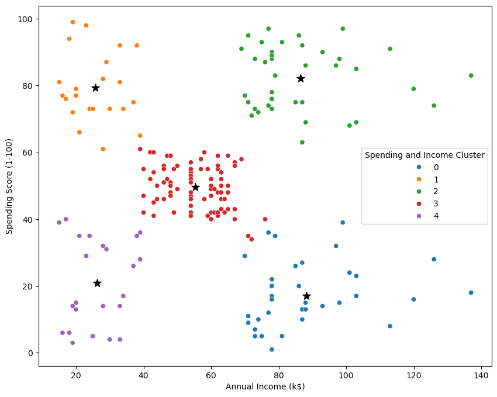

Road Accident DashboardTableau / UK road safety

Data visualization / Tableau
Analytics & business intelligence
I’m Sofwan. I build dashboards and analytical tools that make complex information easier to understand.
Explore selected workData visualization / Analysis / Automation
Six projects. Different questions.

Data visualization / Tableau

Machine learning / Customer insight
Business intelligence / Sales
Commercial work / Risk analytics
Commercial work / Business intelligence
Commercial work / Reporting automation
My work connects the question a business needs to answer with the data that can answer it.
Clarify the decision, the audience and what useful information looks like.
Connect sources, investigate anomalies and validate the data before it becomes a report.
Build a focused visual story or a repeatable workflow that people can use.
I’m Sofwan Kaji, a Data Analytics Officer working across business intelligence, risk analytics and reporting automation. My toolkit includes SQL, Power BI, Python and Excel.
I care about reliable data, thoughtful presentation and the details that make information useful.